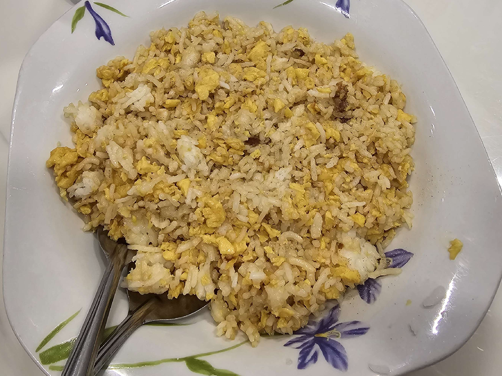

Fried Rice

Description
Fried rice is a dish of cooked rice that has been stir-fried in a wok or a frying pan and is usually mixed with other ingredients such as eggs, vegetables, seafood, or meat.
Personally, I like to include various toppings depending on what I prefer at the time or day.
Ingredients
- Rice
- Egg
- Soy sauce
- Onion powder
- Garlic powder
- Oyster sauce
- Sesame oil
- Ground white pepper
- Meats/vegetables/seafood
Steps
- Add some oil to a pan and heat it on low heat.
- Cook any meats/vegetables/seafood you want to add to your fried rice.
- Crack some eggs and stir fry them.
- Add your rice to the pan and incorporate the egg/meats/veges into the rice.
- Start adding the powder and sauces.
- Adjust the seasonings to personal taste. Sesame oil is the secret to good fried rice, but don't add too much.
- Once done cooking the fried rice, plate the fried rice and season the fried rice with some ground white pepper.
- Enjoy!